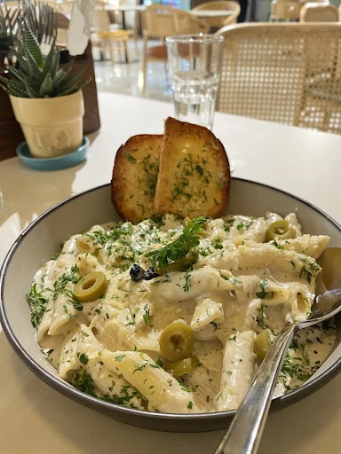
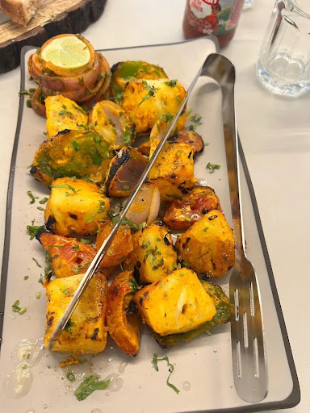

A Little Escape,
A Lot of Flavour.
An artisanal haven celebrating botanical infusions, slow-fermented bakehouse creations, and morning stillness in the artisan quarter.

Handcrafted Ceramics & Herbarium
Crafted weekly by local artisans
Micro-Batch Roasters
Ethical, traceable, shade-grown
Rooted in simplicity,
elevated by craft.
We hold that true morning luxury is neither hurried nor ornate. It exists in the resonance of slow-dripped single origin coffees, the crackle of a thirty-six-hour sourdough crust, and the aroma of sweet wild basil bruised fresh at the countertop.
Our pantry is an extension of our garden beds and regional smallholders. Every tincture, preserve, and dough is made without haste, honoring the tactile cadence of seasonal eating and intimate kitchen hospitality.
Julian & Clara Vance
Founding Bakers & Botanists

Micro-Origin Notice
"Every bean is harvested at high altitude in the Huila highlands, roasted exclusively for Basil Café."
The Season’s Three Pillars
Masterpieces of our daily prep. Prepared in controlled micro-quantities to ensure pinnacle taste and aroma.
 Cold Infusion
Cold Infusion
Wild Basil & Cardamom Cold Brew
$7.50Slow-dripped over twelve hours through single origin Ethiopian Heirloom, married with freshly pressed purple basil leaves and cracked green cardamom pods.
 House Ferment
House Ferment
Heritage Sourdough & Fig Tartine
$14.00Fermented 36 hours from organic stoneground flour, paired with whipped chèvre curd, hand-picked Adriatic figs, mountain lavender honey, and roasted walnuts.
 Morning Bake
Morning Bake
Pistachio & Citrus Blossom Brioche
$6.50Featherlight laminated brioche dough rolled with slow-crushed Bronte pistachios, organic orange blossom essence, and crystallized citrus peels.
Selected from the Hearth & Bar
Swedish Cardamom Knot
$5.50Cultured butter, freshly crushed spice, dark sugar crunch.
Yirgacheffe Pour-Over
$6.00Notes of bergamot blossom, candied lemon, and black tea body.

Garden Herb Quinoa Bowl
$15.50Basil green goddess, soft egg, roasted root vegetables, seeds.

Confit Heirloom Focaccia
$16.00Fermented rosemary focaccia, buffalo stracciatella, slow tomatoes.
“A space designed to breathe. Slow down, gather, and savour the art of the unhurried morning.”
We intentionally omit digital order buzzers, loud timers, and rushed seating. Our salon is arranged for lingering conversations, paper periodicals, and afternoon reflections.
Scenes from Botanical Row


Reflections from Our Regulars
Concept guest impressions from community preview salons
“Beautiful ambience, cleanliness and hygiene is top notch… well crafted menu and food tastes good. They serve normal water as soon as you take a seat, which is rare these days.”
Jitu
Verified Google Reviewer (5★)
“It was my son's first birthday party, and we had a wonderful experience. The food, service and overall arrangements were excellent.”
Aanchel
Celebration Host (5★)
“The ambience is pleasant, with ample seating space and a dedicated parking area. The staff was polite, and the service was quick.”
Akkee
Local Guide (4★)
Shop 1 & 2, 48 New Road
Opp. MKP College, Race Course
Open in Navigation open_in_newCome Take Your Seat
Walk-ins warmly welcomed at all times with ample seating and dedicated on-site parking. For large family celebrations, advance enquiry is recommended.